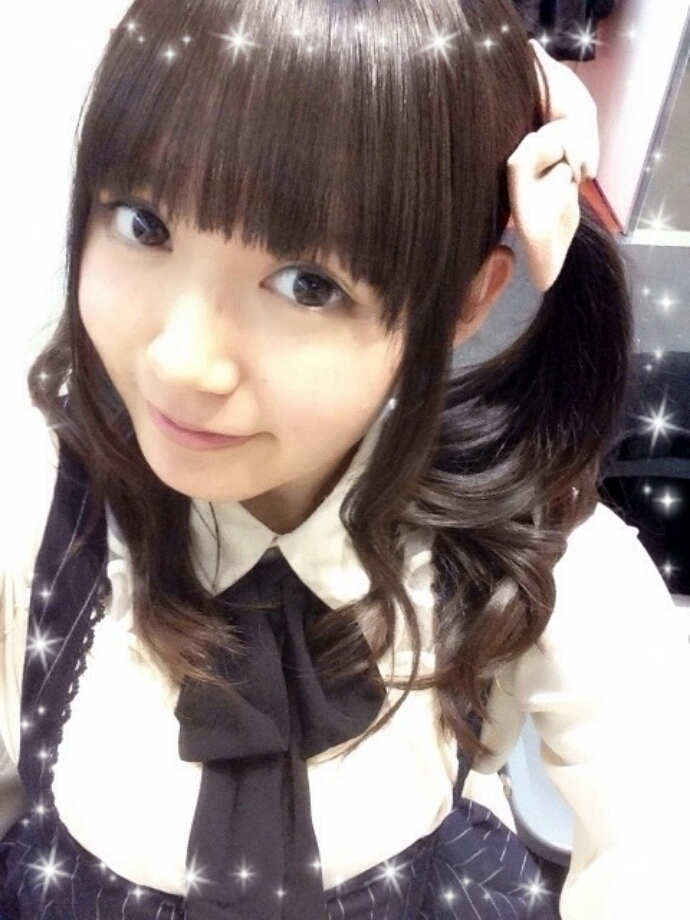
2014年ありがとうございました( ˇωˇ )
最近のことを
順番に振り返っていきますよ～
28日は今年最後の握手会でした！
京都来てくれたみなさん
ありがとうございました♡
今回は本当に
たくさんのひとが遊びにきてくれて
ひめ嬉しかったよ～（；；）
「ひめ～待つの疲れたよ～」って
言われちゃったけれど
それ嬉しい悲鳴です♡♡
年末の忙しい中だったのに
会いに来てくれてありがとう！
2部 ひめたん結び
3部 安定のついんてーる
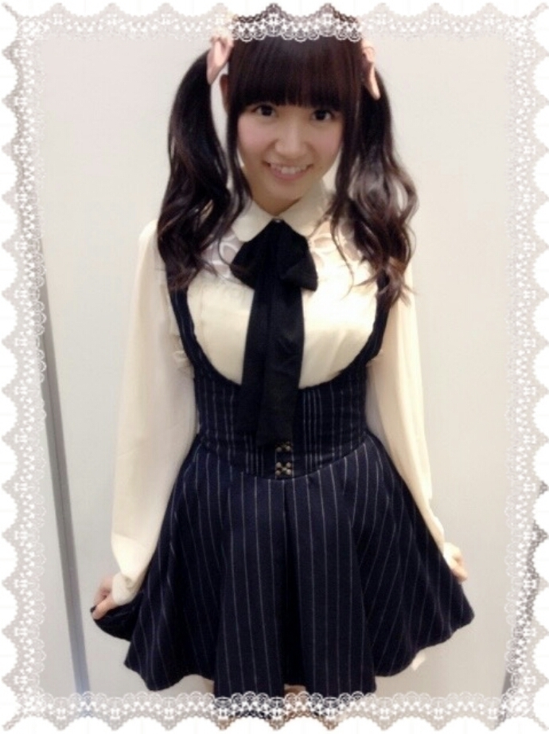
これ、気づきました？
UTBさんの姫計画で着たお洋服を
撮影のあといただいたので
着てみました(∗ ˊωˋ ∗)
結構好評だったので嬉しい～
1部 おろし巻き
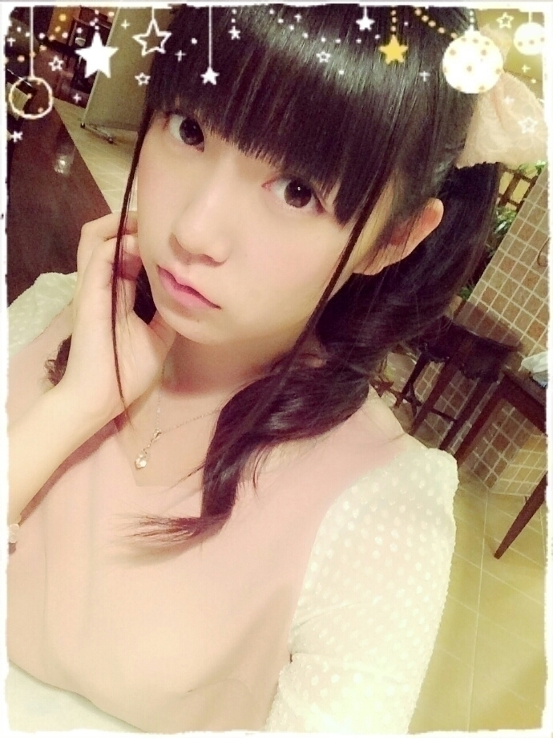
あ、写メは違うの
当日撮る時間なかったのん
ごめんね( >_< )
これはNOGIBINGO!3の#4#5
花嫁回で着てたワンピース！
握手会はおろし巻きでした～
このときは
11月に大阪でやった
スペシャルライブの感想を
たくさん聞かせてもらいました\♡/
アンダーライブで務めたガルルのセンターを
スペシャルライブでも披露できて
良かったな～って改めて思いました！
もう1ヶ月も前のことだけど
その時のライブ思い出すと
やっぱり楽しかったなあ～
クリスマスショーやアンダーライブの感想
あとは年末のご挨拶ができて
よかったです( ˇωˇ )
昨日は「乃木坂46大感謝祭2014」でした！
いおりん♡♡
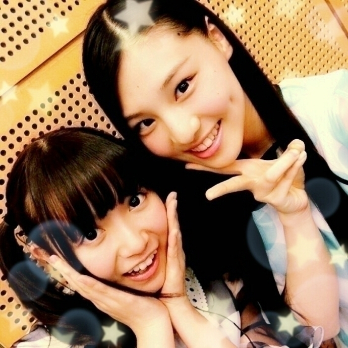
それでね、今回初めてのイベントで
普段のライブとは違う感じで
最初どうなるかな～？って思ってたら
なんだかアットホームな雰囲気で
とっても居心地良かった
ひめは好きだよ⊂( ˆoˆ )⊃
一年を振り返ったり
出し物をしたり、ライブもした！
今年の一番最後に
盛りだくさんで充実したイベントができて
たくさんありがとうできて
良い締めくくりになったな～と思います❁
昼の部ではサンドアートを披露しました
緊張したよう～
でも収録とは違って
みなさんと一緒に緊張感が味わえて
貴重な時間だったかなあと思います♪
夜の部ではクイズ王の古川さんと
司会進行の高橋大輔さんが
びーむをしてくださいました(<・ω・>)
ふるたんびーむ だいすけびーむ！
罰ゲームとは言わず
お二人にはこれからも必殺技
使っていただきたい。笑
来年も身内感溢れる感じの
イベントあったらいいな( ˇωˇ )
また機会があったら
その時は遊びに来てね～＊
一緒にまったりしましょうー
昨日来てくださったみなさん
お忙しい中ありがとうございました！
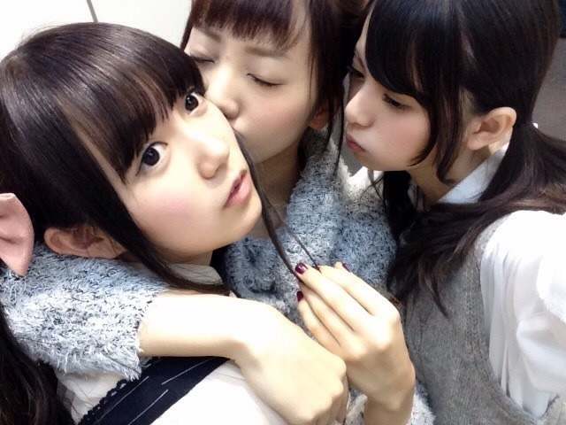
ということで
2014年の総括でもしようかな。
2014年は今までで一番
たくさんの出会いがあった一年(＊´v`＊)
ライブは大きな会場を
たくさん用意していただいて
ひめを発見したよって言ってもらえたり
握手会は部数も増えて
足を運んでくださるひとも増えて
たくさんのはじめましてがありました！
日記に遊びに来てくれるひとも増えたよね♡
ひめたんはこの出会いを
ずっと大切にしていきたいです(＊´ω`＊)
去年、おととし、
ずっと私を知ってくれてるひととも
さらに仲良くなれた一年でした♡
それから活動も充実してたなあ～
個人的には乃木のののMCが
本当に楽しかったし
私の中でとっても大きいこと\( ˆoˆ )/
ずっとやりたかったから
MC期間が幸せでした\❁/
たくさん学んだ3ヶ月半でした～
乃木ののをきっかけに
握手会来てみたよ～ってひともいてくれて
私を知るきっかけになったのかな？
アンダーメンバーが活躍する場を
与えられた一年でもありました
アンダーライブは
私やみんなを成長させてくれました
これは最近書いたばかりだからいいかな？
のぎ天ではたくさんの貴重な経験を
させていただきました(っ´ω`c)
アンダーメンバー中心で
ひとつ番組が出来るなんて
本当にありがたいこと。
2014年もファンの皆様、スタッフさん
たくさんの人に支えられて
こうして活動することができました
私に、乃木坂46に
携わってくださったすべての人へ
一年間ありがとうございました！
来年はもっと飛躍できる一年に
なるよう頑張ります
これからもよろしくお願いします\( ˆoˆ )/
来年は高校卒業の年
私にとって節目になる年かもしれません。
さあ！ひめたんの年にするぞー！
ぴょーん
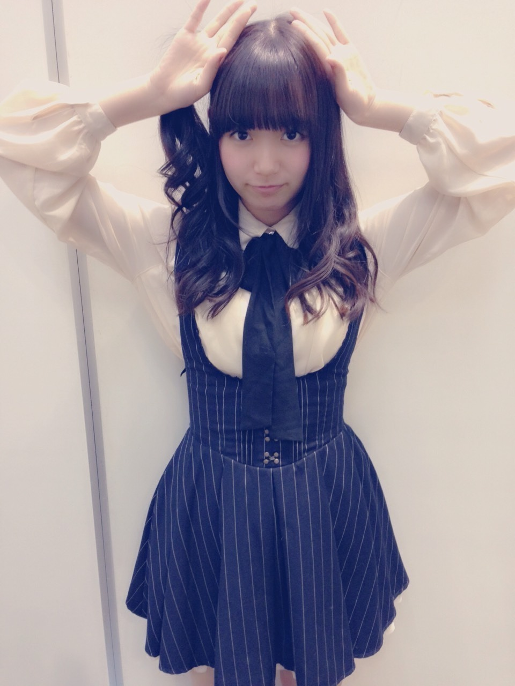
今年最後の日記だから
写メ多めにしてみましたよ～
あ、前回の日記のコメントで
みんなひめたんの振り返りしてくれて
ありがとう⊂( ˆoˆ )⊃
これみんなのコメント読みながら
書いてみた日記だよ♡
よいお年を！
(＊´・ω・＊)
メリークリスマス！
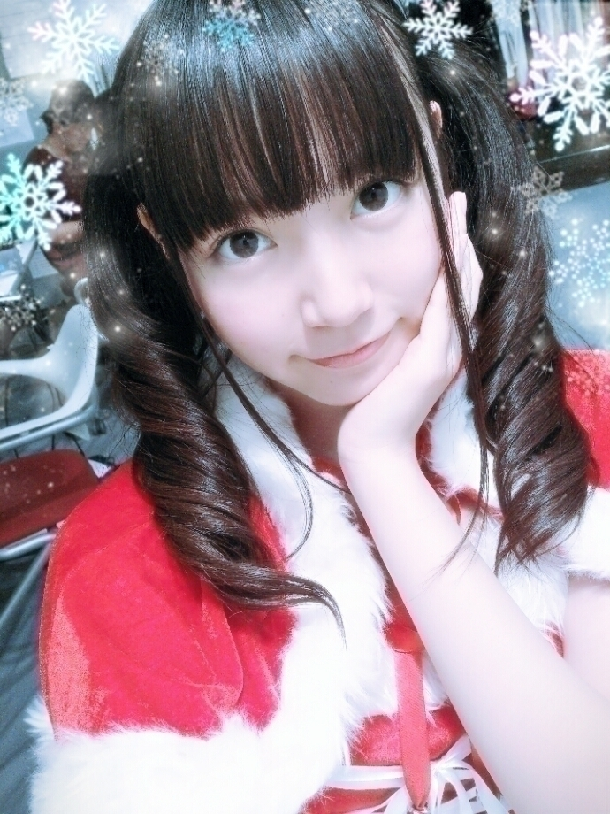
みなさん今年のクリスマスは
すてきな思い出できた(＊´v`＊)？
日記のコメントで
教えてくれてるひともいて
ありがとうね～
生写真、ライブ、握手会と
今年もたくさんサンタ服着たなあ
ひめのクリスマスは
イブは さゆ・万理華と温泉へ！
都会の雑踏を忘れようと
電車でちょっと長旅したんだよ～
3人とものんびりまったりしてるから
電車の乗り換え間違えそうになったり
途中で売店に寄り道したりして......♪
ペースが似てる2人とだから
とっても居心地が良くて(﹡ˆoˆ﹡)
クリスマスはお仕事でした～
真夏と2人でお話したよ♡
これについては
情報解禁をお楽しみに( ˇωˇ )
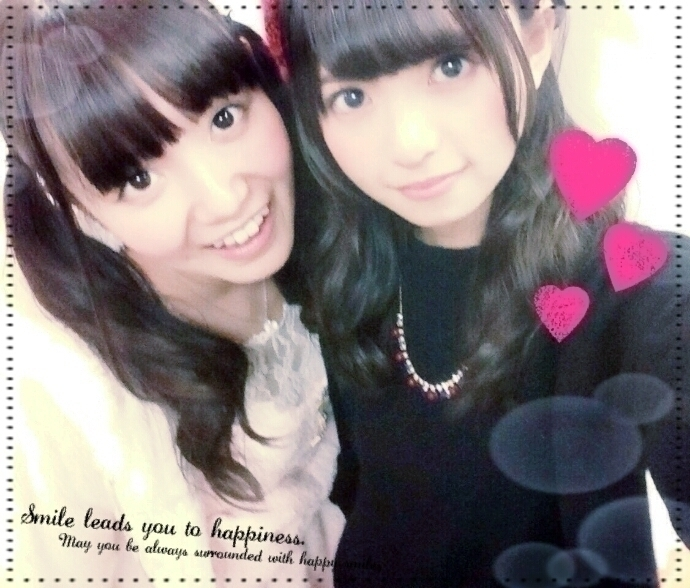
のぎ天次回ゴルフ部だよ～
ゴルフ部頑張ってるよ( ^o^ )
少しずつでも上達しなければ......！
握手会でよく
ゴルフトークするけど
日記読んでくれてる人の中にもいるかな？
ゴルフやってるひとー？？
それから、 STREETJACKさんに
取材していただきました！
最新号に載ってます( ^o^ )☆
ひめは大好きな7thの制服を着て
3年間を振り返ったりしてます～
他にも乃木坂のメンバー
たくさん載ってるよ
よろしくね♪
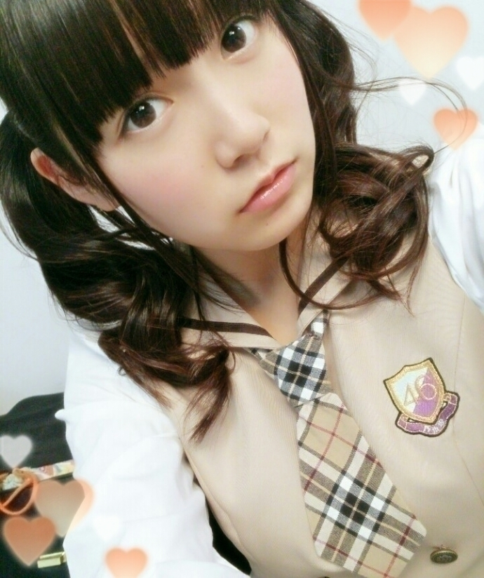
明日は京都個握！
今年最後の握手会～
年の瀬の忙しい時期なのに
会いに来てくれてありがとう！
楽しみにしてるね⊂( ˆoˆ )⊃
最近はみんな優秀だけど
明日もお寝坊厳禁だからね？♡
30日は感謝祭！
初のモバイル会員様限定イベント
ライブとは違った形式でやるから
どんな感じになるんだろう～
いろんな企画盛りだくさんだから
来てくれるひとは楽しみにしててね♡

 きのうみり愛のとこ行って、びーむを
きのうみり愛のとこ行って、びーむを
お願いしたら、"お姉ちゃんのだから"
ってしてもらえなかった(T^T)
ひめたん許可してよー。わーかわいい(´｡･v･｡｀)
さっすが私の妹はデキる子です！
EX大衆の最新号の中で私たちのコンビ
「すだれ姉妹」になりました～
内輪でずっとそう呼んでたんだけどね♡
新衣装って・・・何の???あーごめんごめん(´・ω・｀)
クリスマスショーからの新衣装！
かわいいよね～この衣装好き♡
ひめたんの選ぶ
2014年No.1アニメは何ですか？うーん難しいなあ
ノーゲーム・ノーライフ
月刊少女野崎くん
僕らはみんな河合荘
かなあ(＊´v`＊)
たんひめが使ってるグロス
教えてほしいです♡♡JILL STUARTです\( ˆoˆ )/
おそろっちしよ～
おにゃのこは"たんひめ"って
呼んでくれる子が多い気がする♡
"たんひめ"の名付け親は愛未ちゃんだよ～
ひめたんに
ファンレター送りたいんだけど、
どーやって送ればいいのかな？リボンもプレゼントしたいわーありがとう( ´•̥ω•̥` )うれしい～
〒102-8353
東京都千代田区六番町4番地5
「乃木坂46運営事務局」宛
まで送ってください♡
ひめたん46は
今日はおやすみさせてください( >_< )
いつもたくさんのコメント
ありがとうございます～
コメントしてくれてる名前を
握手会で教えてくれたり
名札作ってくれてたりすると
わ♡って思うの(﹡ƠωƠ﹡)んふ
もうすぐ2014年が終わっちゃう！
みんな、今年はどんな一年だった？
乃木どこ、のぎ天、乃木のので
面白かった場面とか
あのライブよかった！とか
なんか教えてほしいな( ˇωˇ )
ひめは京都から帰ったら
ひとりでおとなしく
今年の反省会でもしようかな......。
(＊´・ω・＊)
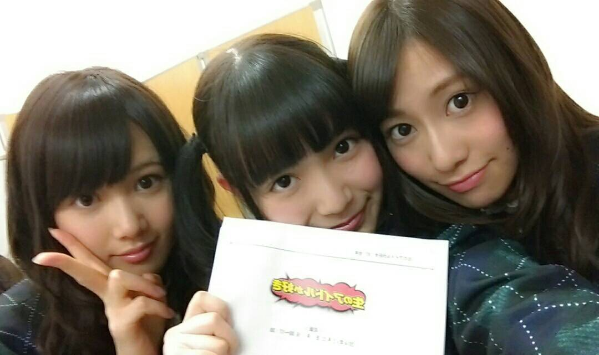
昨日は
「生のアイドルが好き」
公開生放送に参加しました！
待ちに待った生ドル。
ひめたんは初登場だったのですが
ゆるゆる～でステキな番組( ˇωˇ )
スタッフさんも
何してもおっけーだよーなんて
言ってくださって
とってもあたたかい現場でした♡
MCのまっちゅん、かなりんと5人で
のんびりほんわかトーク
お届けできたんじゃないでしょうか～＊
生放送みてくださった方、
スタジオまで遊びに来てくれた方、
街頭ビジョンみてくれた方
ありがとうございました\( ˆoˆ )/
一昨日は
MUSIC FOR ALL,ALL FOR ONE 2014
に出演させていただきました。
乃木坂を初めてみる方々も
一緒に盛り上がってくださって
本当に嬉しかった！
そして乃木坂ファミリーのみなさんも
たくさん遊びに来てくださって
心強かったです～
アンダー曲も披露させていただけて
何だか感無量( ´•̥ω•̥` )
豪華な共演者の方々と一緒に
私たち乃木坂46も呼んでいただいて
幸せな時間でした。
乃木坂としては今回で3回目\＊/
初めて出演した時よりも
パワーアップしてるかな～
そして今日は
名古屋個別握手会でした！
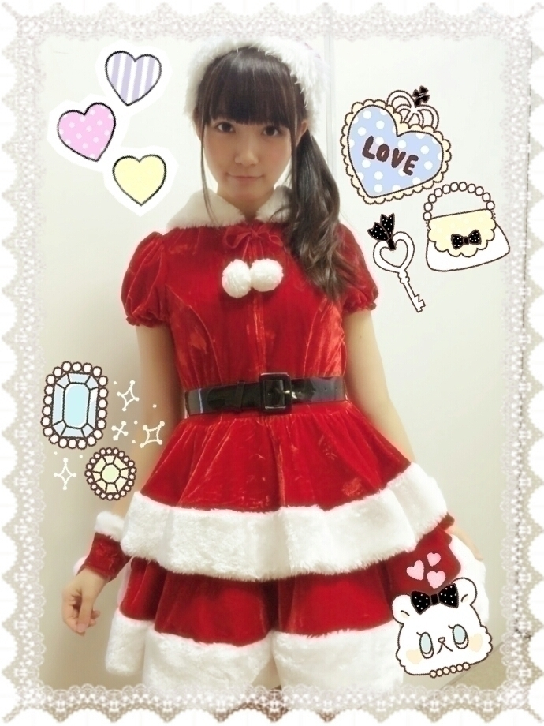
サンタさん(＊´v`＊)
これねースカートねー
写メで見るよりもフリフリなの
遊びに来てくれたみなさんありがとう♡
メンバーもファンのみなさんも
サンタさんの格好したひと多くて
今日楽しかったなあ～
アンダーライブ・クリスマスショーの
感想をたくさん聞かせてくれたね！
会場に来てくれたひとも
スカパー生中継観てくれたひとも
ありがとう♪
ほかにはのぎ天とか、乃木どことか
アニメとかスクフェスとか
いつも楽しいお話たくさん！
いつも来てくれるひとも
はじめましてのひとも
寒いなか会いに来てくれて
今日は本当にありがとうね(´-ω-`)♡
よいお年をのひとも
また京都で！感謝祭で！のひとも
いたけれど、みなさん
よいクリスマスを......。
＼ 新衣装お気に入り♡ ／
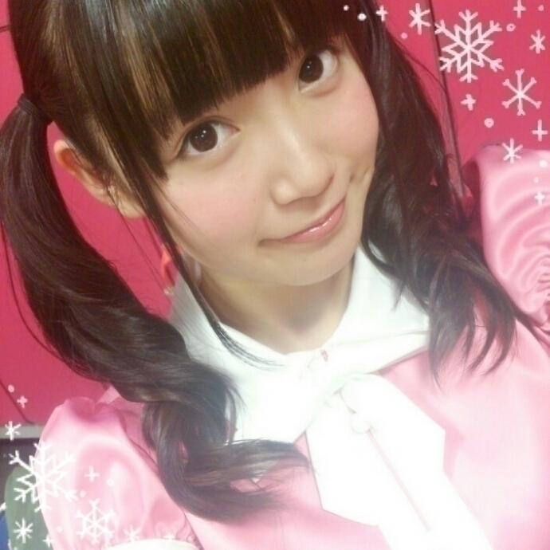
ここで告知させてくだいね
15日 EX大衆
19日 GiRLPOP 2015 WINTER
発売中です\( ˆoˆ )/
EX大衆さんは
すだれ姉妹のみりりんと2人！
2期生さんとのペア取材は
初めてなので
みりりんで嬉しい♡♡
今年の下半期について
2人で振り返ってみたり
来年のこととかお話してます～
GiRLPOPさんは
選抜メンバーが表紙、
アンダー・研究生が裏表紙！
自由な感じで写真撮っていただいたり
インタビューもありますよ( ^o^ )
乃木坂ちゃんたくさんいて
必見ですよ～
よろしくお願いします☆
最後に、乃木のので募集してた
「汗かき選抜」の結果
2位に選んでいただきました！
私は本編でも言ったけど
汗キャラになるのは不本意だ！
入れないでねみんなーは
フリじゃないよ！
みんな何なのドSなの(｀・ω・´)
でも乃木のの大好きだからいいや♡

 ひめかチョコミント好き？？
ひめかチョコミント好き？？今年の夏くらいにあすかりんが
チョコミントアイス食べてて
それきっかけで好きになった♡
格差社会コンビだいすき。
ふたりでいつもなに聞いとるのー？♡音楽の話だよね～
このときは何だったっけなあ
まずヘッドホン共有も高度な技だし
なかなかしないけどね( ˇωˇ )
お手紙と一緒に私のお気に入りのリボン
プレゼントしたらつけてくれるかな？
勝手におそろいにしてつけたーい笑もちろん♡♡
おそろっちしよ？
楽しみにしてるね( ^o^ )りぼん女子
ひめたんは、落ち込んだとき
どのようにして切り替えてるの？寝る！誰かに話す！
あんまり溜め込んじゃだめだよー
ひめ話聞くよ？？
ひめたんの日記の
コメント欄下２ケタに46を踏んだ方へ
手書きでコメ返するコーナー
＼ ひめたん46 ／
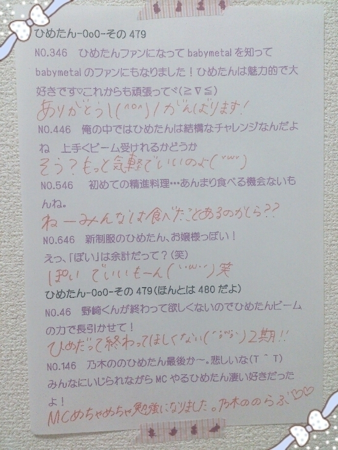
いつもたくさんのコメント
ありがとうございます
今年のクリスマスみんなは何するの？
ひめはお仕事してるよ～
イブはあるメンバーとあるところへ......♡
きゃー楽しみ(＊´ω`＊)
(＊´・ω・＊)
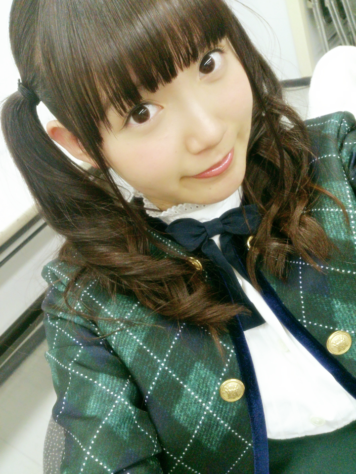
次回 生ドル初登場！
らりん、玲香も一緒です( ^o^ )♡
12/22 16:00~
「ニコぶくろスタジオ」から
公開生放送！
ぜひ遊びに来てくださいね\❁/
コメントもたくさん
待ってます～
そしてこの前は
10福チェーン"運命の推しメン会議"が
ニコ生でありました～
日記とかで事前に告知できなくて
ごめんね( >_< )
観てくださったみなさんありがとう！
ひめたんはキャラアニさんの
お手伝いをすることになりました！
キャラアニさんのほうで
アルバムを購入された方には
1/6のお渡し会で
橋本、和田、かりん、中元が
待ってますよ～＊
明日は
MUSIC FOR ALL,ALL FOR ONE 2014
に出演します(﹡ˆoˆ﹡)
去年はバレッタ選抜としてでしたが、
今年はアンダーメンバーも
呼んでいただきました！
ライブ楽しみ～♪
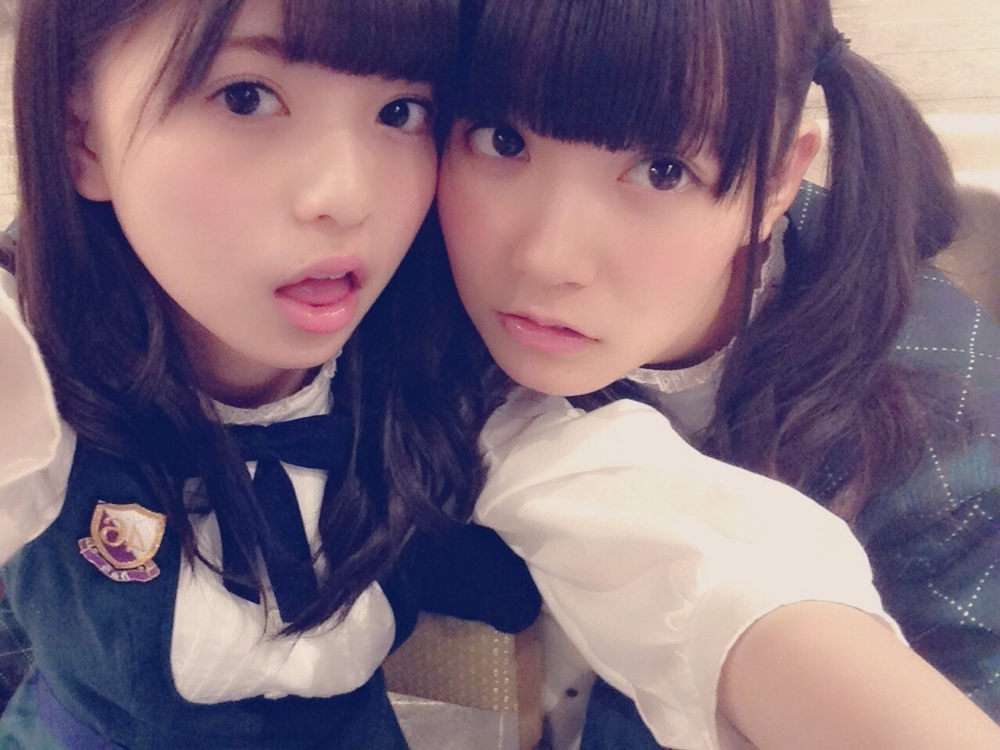
わーこのあすかりん
あかちゃんみたい(∗ ˊωˋ ∗)
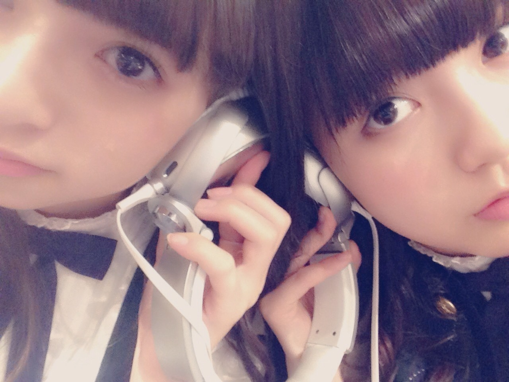
ヘッドホンの音でさえも
共有しちゃう私たち格差社会。
 ひめたんは3日間で
ひめたんは3日間で
一番思い出に残ってる事はなに？うーん何だろう
ステージ以外のお話ってんなら
アンダーライブのあとで
ゆみ姉がメールくれたことかな～＊
年末の握手会で初めて
ひめたんのところに行くんだけど
何話せばひめたんと仲良くなれる～？わーありがとう♡
何でも嬉しいけれど、最初なら
自己紹介とか、
乃木坂好きになったきっかけとか
教えてほしいなあ(＊´ω`＊)
ちなみに今ひめたんすくふぇすランク
どれくらいですか？？？もうすぐ100いきます\( ˆoˆ )/
一回リセットになって今2代目なんだけど
それにしてはなかなか頑張ってる♡
ただリセットしてから一回も
UR引いてない( ´•̥ω•̥` )
ひめたんはお好み焼きとか焼きそばを
おかずにご飯食べれるタイプ？あーキツいねー
広島のお好み焼きは
焼きそば入ってボリューミーだから
おかずなんてもんじゃない:(´◦ω◦｀):
ひめたんの日記の
コメント欄下２ケタに46を踏んだ方へ
手書きでコメ返するコーナー
＼ ひめたん46 ／
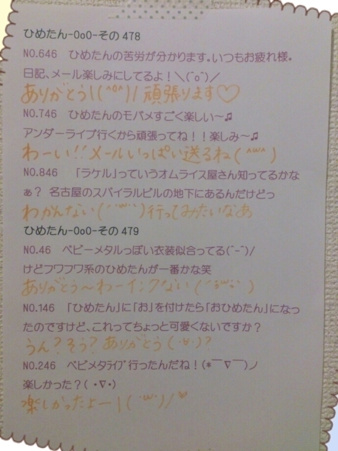
ねーインク( ´•̥ω•̥` )
いつもたくさんのコメント
ありがとうございます
ライブの感想たくさん！
中元委員長とロマンスのスタートが
好評で嬉しいです( ^o^ )
クリスマスメドレーで
さゆとふたりで歌ったのも
みんな喜んでくれた♡
そう、かりんちゃんの755で
気づいたんだけど
前回私が載せた写メの
かりんちゃん蘭世ちゃん
目閉じてたね( >_< )ごめんね～
そろそろ秋アニメが
最終回を迎える時期ね(´；_；｀)
アカメとか録画してるんだけど
寂しいからまだ観てないの～
テラフォーマーズも終わっちゃった。
スクフェスは
にこちゃんイベ始まったね！
前回の真姫ちゃんは
ライブと重なってて忙しくて
ゲットできなかったよ(´；_；｀)
(＊´・ω・＊)
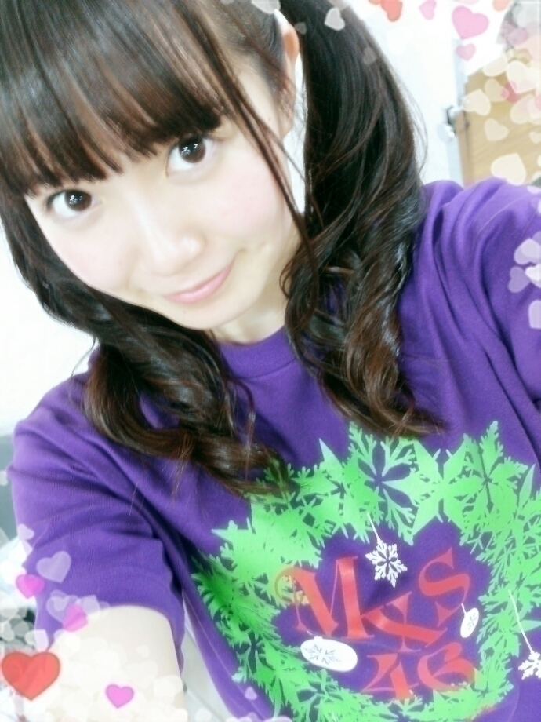
3日間4公演
たくさんの方に支えられて
無事終わりました\( ˆoˆ )/
来てくれたみなさん
ありがとうございました♡
アンダーライブ セカンド・シーズンFINAL!
今までもアンダーライブでは
シャッフルユニット、コント、1人MC
など様々な企画に挑戦してきましたが
今回挑戦したのは「全員センター」。
元々アンダーライブでは
流動的にポジションが変わるのも
面白いねって言われてきました
「全員センター」は
普段の乃木坂46のライブでは
観ることのできない企画だと思います。
もちろん簡単なことではないですが
アンダーライブにしか出来ないことに
みんなで挑戦しました(｀・ω・´)
みんなくじびきで決めたんだけど
ぴったりハマる人が多くて
やっぱり引き寄せてたりするのかなあ
そんな中でひめたんが引いたのは
ロマンスのスタート！
ライブでやるとコールが揃って
盛り上がるアップテンポな曲であり
振り付けがかわいらしいのも特徴です
私はオリジナルメンバーではなかったけれど
センターを務めたことで
この曲に愛着が沸きました♡♡
ロマンスのスタートは
七瀬がセンターを務めた
8thシングルカップリング曲。
ライブではどうやったら
自分らしさを出せるかなと思って
たくさん考えました
センターをするならこの曲の間は
会場全体を私の色に染めてみたい。
私はダンスが好きだし
コールも元気いっぱいしてほしいし
笑顔は苦手だけど、この曲では
にこにこ笑った顔をいっぱい見てもらいたい！
そんな思いでステージに立ちました～
本番は客席に近い方のステージだったので
みなさんからのひめたんコールを
たくさん浴びて幸せ( ˇωˇ )♡
よかったよ～ってメンバーから
たくさん言ってもらえて
自信になったなあ。
見にきてくださったみなさん
いかがでしたか？？
あと、ミュージカルというものも
挑戦したんです(゜ω゜)
ひめたんは意地悪なお嬢様役をしました！
普段はこんな感じのひめたんにぃ♡
意地悪な役がぁ♡
務まるかなあって不安だったけれど♡♡
でもやってみたら意外とハマって(笑)
楽しかったですよ～
「はぁ？」の台詞の小生意気感が好きだと
褒められました(笑)
お芝居をする機会も実は
プリンシパルくらいしかないけれど
やってみると楽しい！
お芝居はまだまだ勉強だな(´-ω-`)
それでね、アンダーライブ
本当にたくさんの方が
遊びに来てくださってびっくりしたの
M1の咄嗟が始まった瞬間、
サイリウムで染まっている客席を見て
泣きそうになっちゃって......
なんかアンダーライブが
始まった頃のことを思い出したんだよね。
Merry Xmas Show 2014
ひめたんの参加している
カップリング曲はこんな感じ！
4位 涙がまだ悲しみだった頃
7位 あの日 僕は咄嗟に嘘をついた
8位 13日の金曜日
9位 失いたくないから
12位 乃木坂の詩
13位 春のメロディー
15位 狼に口笛を
21位 やさしさとは
23位 そんなバカな・・・
24位 海流の島よ
25位 生まれたままで
28位 左胸の勇気
29位 扇風機
投票してくださったみなさん
ありがとうございました( ^o^ )
ひめたんはバレッタ＋4曲
アルバムに収録されます。
個人的にはユニット曲の
やさしさとは、海流の島よが
ライブで披露できたのが嬉しかった～
どちらもMVがない曲だし
ライブでも毎回披露するわけではないので
純粋に楽曲が愛されているんだなあ～
咄嗟は個人的に思い入れがあるから
もうちょっと上にいて欲しかったかな
でも皆さんからいただいた順位
ありがたいです( ˇωˇ )♡
クリスマスメドレーは
さゆとふたりで
歌うパートがあったのですが
登場する直前までふたりで
顔合わせてきゃっきゃしたりして......♡
ふたりでユニゾンできたのも
嬉しかったなあ～
クリスマスショーのほうは
静かに聴かせるところもあって
おしとやかなクリスマスって感じ、
クリスマスイブショーこと
アンダーライブは、いつもの
パフォーマンス重視の元気な感じ。
両方来てくださった方は
同じ乃木坂、同じ有明コロシアムでも
違った雰囲気を楽しんでいただけたと思う！
ということでライブに参戦した方は
いかがだったでしょうか？
お留守番ちーむのみんなは
少しでも会場の雰囲気伝わったかな？
このライブ期間中
全然余裕がなくて日記も書けなくて
寂しかったかな(´-ω-`)ごめんね？
今日から通常♪
またたくさん日記更新するから
遊びにきてね～
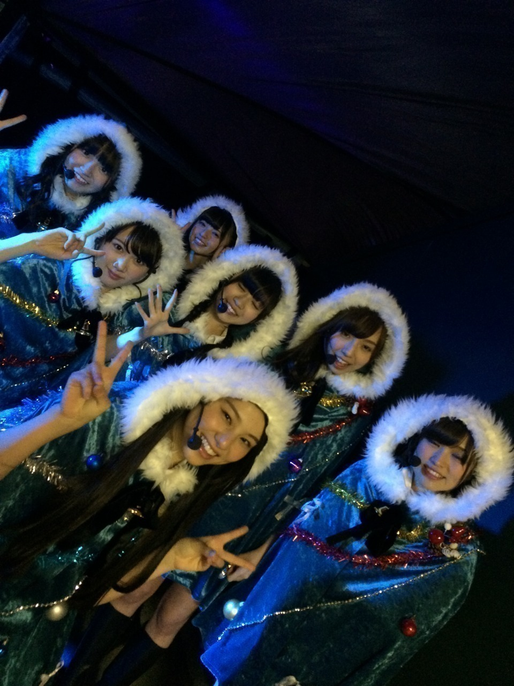
いつもたくさんのコメント
ありがとうございます！
前回の日記に感想書いてくれたひとも
いらっしゃったけれど
ライブの感想まだのひとは聞かせてね♡
(＊´・ω・＊)